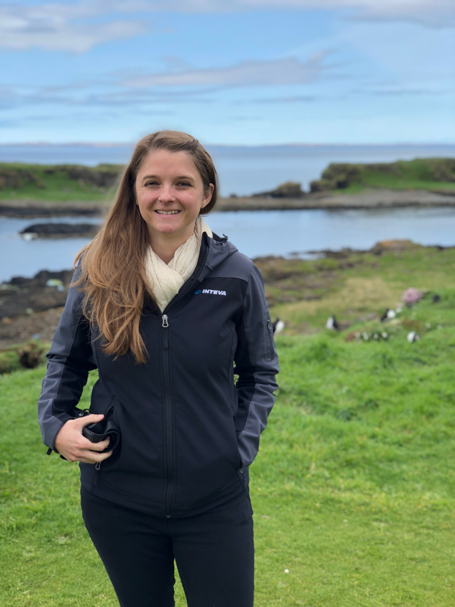

about me
Hi, I’m Caitlin. I’m a graduate student at the University of Michigan’s School of Information specializing in Human Computer Interaction and User Experience Research & Design.
My passion for user-centered design began while designing advanced development technology marketing plans in the automotive industry. Through this work, I’ve come to believe that it’s crucial to always champion the user.
In my free time, I’m a world traveler - always looking for a new place to visit - knitter, craft beer enthusiast and aspiring home chef.
I hope to combine my passion for user-centered design with my experience in technology marketing to develop superior experiential products.
